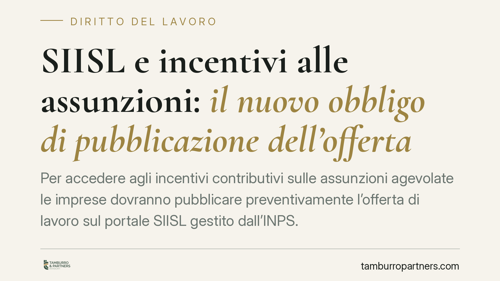

SIISL e incentivi alle assunzioni: il nuovo obbligo di pubblicazione dell'offerta
Per accedere agli incentivi contributivi sulle assunzioni agevolate le imprese dovranno pubblicare preventivamente l'offerta di lavoro sul portale SIISL gestito dall'INPS. L'obbligo discende dal Collegato Lavoro e la sua operatività concreta è legata alle istruzioni attuative dell'Istituto. Per i datori che programmano assunzioni incentivate cambia l'ordine delle operazioni: prima la pubblicazione, poi la selezione.

Il fatto
Il sistema degli incentivi alle assunzioni introduce un passaggio procedurale ulteriore: la pubblicazione preventiva dell'offerta di lavoro sul SIISL (Sistema Informativo per l'Inclusione Sociale e Lavorativa), la piattaforma gestita dall'INPS nata per coordinare politiche attive, Assegno di inclusione (ADI) e Supporto per la formazione e il lavoro (SFL).
In concreto, l'accesso a determinati esoneri o sgravi contributivi viene subordinato al fatto che l'azienda abbia dato visibilità alla posizione sul portale prima di procedere all'assunzione. La logica è intercettare i soggetti presi in carico dai servizi per il lavoro e favorirne l'incontro con la domanda.
Inquadramento normativo
Il collegamento tra pubblicazione dell'offerta sul SIISL e incentivi trova fondamento nella L. 13 dicembre 2024, n. 203 (cd. Collegato Lavoro), nell'ambito delle disposizioni sulle attività di politica attiva e sull'utilizzo della piattaforma informativa. *(Il riferimento di dettaglio all'articolo che disciplina specificamente l'obbligo è da verificare sul testo ufficiale in Gazzetta.)*
La norma primaria, tuttavia, non è immediatamente autoapplicativa su questo punto: la decorrenza e le modalità operative dipendono dalle istruzioni attuative dell'INPS (circolari e messaggi) e dagli eventuali decreti del Ministero del Lavoro. Allo stato, la tempistica puntuale dell'obbligo va letta alla luce dei provvedimenti attuativi in via di definizione, salvo proroghe. Consigliamo quindi di non assumere come definitiva alcuna data finché non sia confermata da fonte ufficiale INPS.
Un chiarimento terminologico utile. Le assunzioni agevolate combinano due ordini di requisiti:
- Requisiti soggettivi: riguardano il lavoratore (età, condizione di disoccupazione, percezione di sostegni come ADI, appartenenza a categorie protette o svantaggiate).
- Requisiti procedurali: riguardano il comportamento del datore (comunicazioni obbligatorie, rispetto delle condizioni generali per gli aiuti, e ora la pubblicazione preventiva sul SIISL).
Il nuovo adempimento incide sul secondo versante: non modifica chi può essere assunto con sgravio, ma aggiunge una condizione formale senza la quale il beneficio può non spettare.
Implicazioni pratiche
Per il datore di lavoro cambia soprattutto la sequenza temporale. Finora la selezione del candidato precedeva, di fatto, ogni adempimento. Con l'obbligo SIISL, la pubblicazione dell'offerta diventa un passaggio a monte: assumere prima di aver pubblicato può compromettere il diritto all'incentivo.
Questo ha un impatto diretto su chi gestisce ricerca e selezione in tempi stretti o su chi "regolarizza" collaborazioni già avviate contando sugli sgravi. La programmazione delle assunzioni incentivate dovrà prevedere un margine per la pubblicazione e per la relativa documentazione.
Sul piano del rischio, è opportuno essere prudenti: allo stato attuale non risultano previste sanatorie documentali successive che consentano di recuperare l'incentivo a posteriori in caso di omessa pubblicazione, salvo diverse indicazioni di prassi INPS. In mancanza del presupposto procedurale, l'esito ordinario è il disconoscimento del beneficio, con recupero delle somme indebitamente fruite.
Resta inteso che l'obbligo non trasforma l'incentivo in un automatismo: valgono comunque le condizioni generali in materia di aiuti all'occupazione (regolarità contributiva, rispetto dei principi UE sugli aiuti di Stato, assenza di obblighi di assunzione preesistenti).
Cosa fare in concreto
- Verificate la decorrenza effettiva sul sito INPS e nei messaggi/circolari attuativi prima di programmare assunzioni incentivate: non basatevi su date circolate in via informale.
- Rivedete il workflow di selezione: inserite la pubblicazione dell'offerta sul SIISL come step obbligatorio *prima* dell'assunzione, non successivo.
- Documentate la pubblicazione: conservate evidenza di data e contenuto dell'offerta, utile in caso di controllo.
- Accreditate per tempo l'azienda sul portale e verificate credenziali e deleghe ai consulenti, per evitare blocchi dell'ultimo minuto.
- Coordinate HR e consulente del lavoro su ogni assunzione agevolata in pipeline, distinguendo i casi già avviati da quelli futuri.
È opportuno non attendere la scadenza per allineare le procedure interne: l'adeguamento del processo richiede tempo e coinvolge più funzioni aziendali.
---
Contributo informativo a cura di Tamburro & Partners - Avv. Giuseppe Tamburro. Non costituisce parere legale.
Ogni storia di lavoro ha i suoi tempi.
Se gestisci HR e vuoi un confronto su contenzioso, ispezioni o licenziamenti, scrivi allo studio. Ti rispondiamo entro un giorno lavorativo.